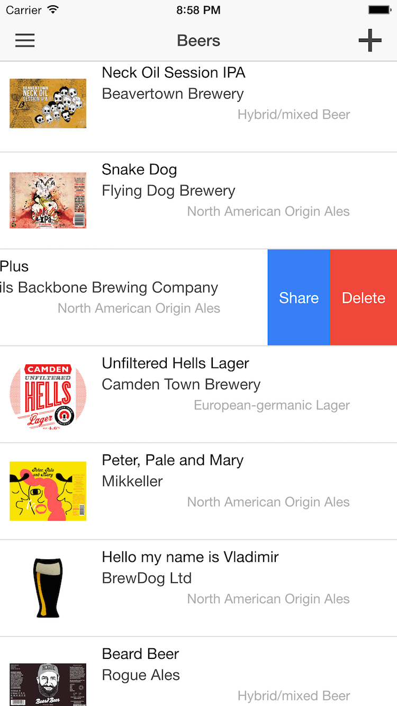
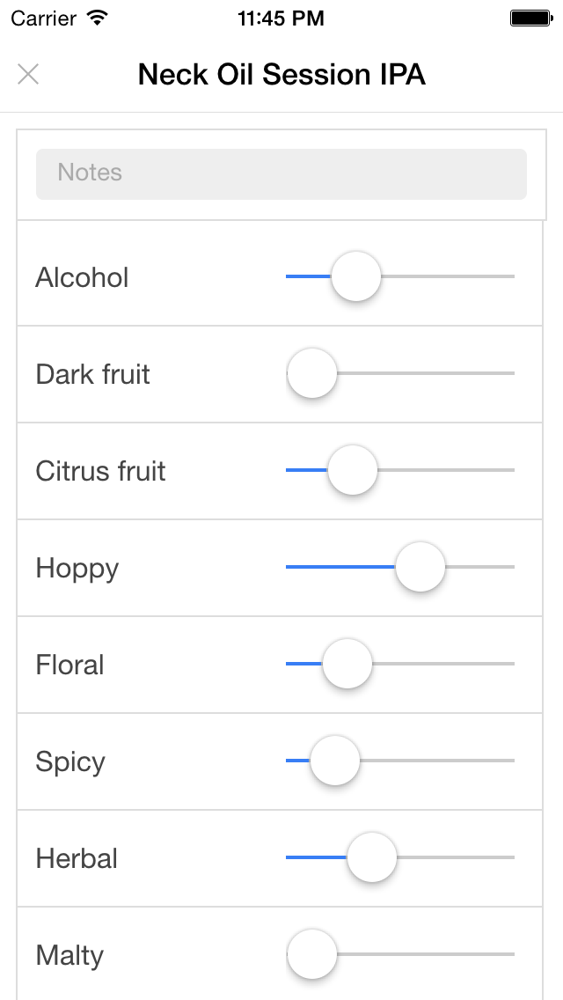
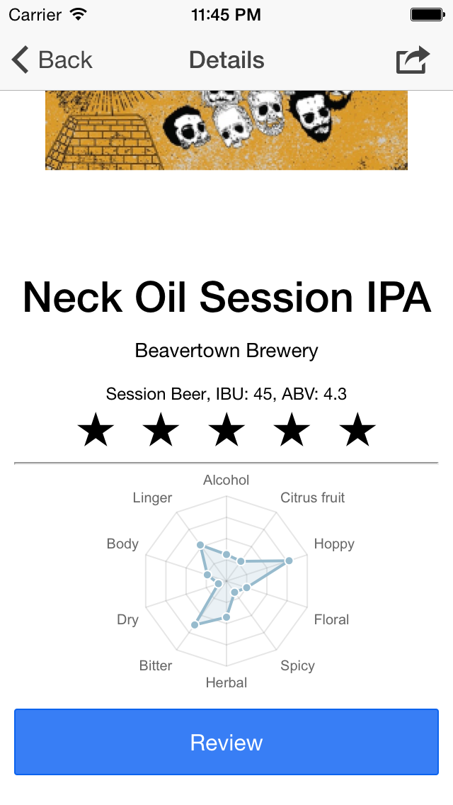

A craft beer journal for iPhone and iPad.
Log the beers you try, with a photo and your notes. Like or dislike each one, score 16 flavours, and see its flavour profile as a chart. Your beers sync between your devices via iCloud.
Requires iOS 18 or later. On your home screen, the app appears as Beer Notes.
Already use the App Store version? The beta doesn't import your existing beers yet, so it starts with an empty list. It leaves your old data untouched so a later release can bring it across.



Screenshots are from an earlier version of the app.